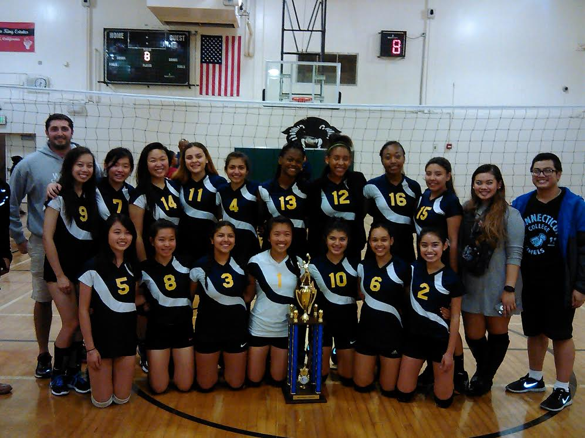

Tayanna's Volleyball Tutorial
View the Project on GitHub Tay-from-the-Bay/home_page
Welcome to My Tutorial.
Hi! My name is Tayanna Lemons,a rising senior in high school. I've been playing volleyball for four years and have truly found a passion for the game. Since I love the game so much I want to have the chance to help others learn how to play. To start off you will need: volleyball or basketball shoes,
 knee pads,
knee pads,
 shorts(preferably spandex),
shorts(preferably spandex),
 a t-shirt (any t-shirt),
a t-shirt (any t-shirt),
 a volleyball,
a volleyball,
 and you should generally not wear jewlery. Now you must learn the basics, such as ready position, before learning how to play.
and you should generally not wear jewlery. Now you must learn the basics, such as ready position, before learning how to play.
Beginners
As a beginner you wil need to learn how to pass the ball. In volleyball, passing is called bumping. So, as you watch the video below you will learn the basics of bumping.
Serving is also a skill everyone needs to learn. Unless serving is a big weakness of yours, everyone will have to serve at some point. So, you can learn the general form and technique that goes into serving below.Intermediate
A more challenging task to take on is hitting. A lot of people say the taller people on the team is more cut out for it but anyone can do it. Hitting is really different form bumping, but a big skill for any volleyball player to learn.
Now, setting is an evenn harder task to accomplish. Setter is one of the hardest positions but the general form/technique is not that hard. Then, hopefully, you and your friends can go from knowing nothing from volleyball to something like this:Advanced
For more advanced techniques you can go to YouTube and search Art of Coaching Volleyball along with eHow Sports.There are many other good websites or YouTubers that provide drills and lessons on how to become a better volleyball player.
Support or Contact
Having trouble with the videos or volleyball itself? You can contact me and I will help you sort it out.